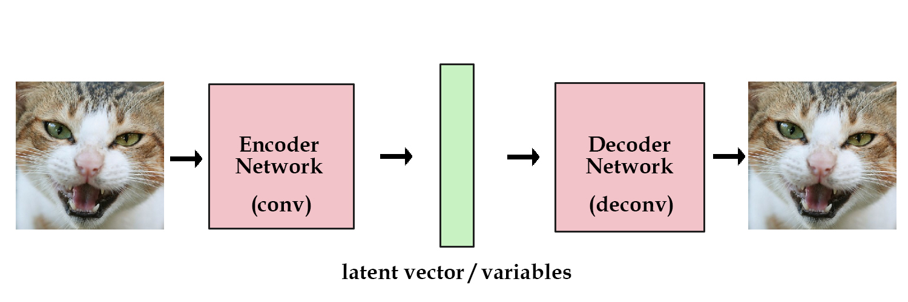
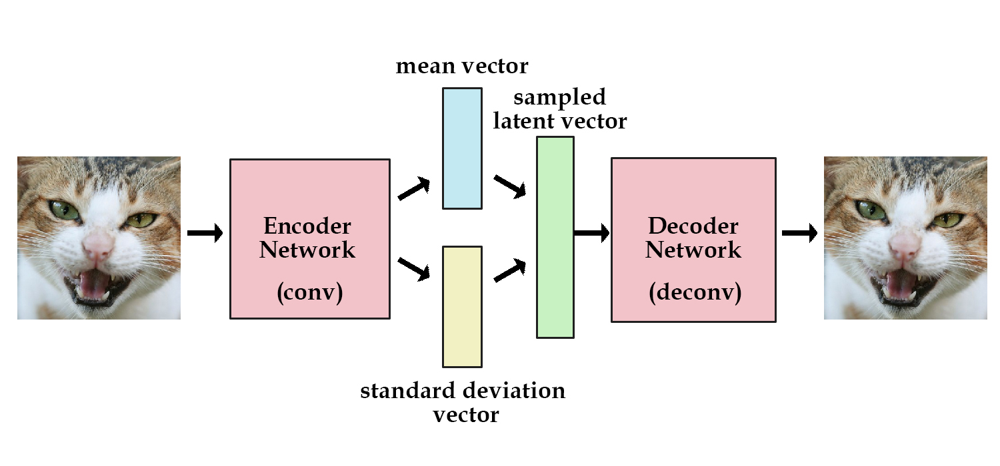

variational autoencoder
variational autoencoder에 대해 쉽게 설명한 블로그를 찾아, 이해한 바를 바탕으로 정리, 요약해본다.
원문링크: http://kvfrans.com/variational-autoencoders-explained/
원문깃헙: https://github.com/kvfrans/variational-autoencoder
원문에서 참고한 블로그: https://jmetzen.github.io/2015-11-27/vae.html
- 블로그 본문에서 .ipynb 구현파일을 다운로드 가능하다
plain GAN의 두 가지 문제
랜덤 노이즈를 입력받아서 만든다. 그래서, 특정한 feature를 가진 결과물을 의도적으로 생성할 수 없다.
- VAE는 decoder의 입력값인 latent z를 생성할때 어느 정도 규칙을 강제한다. 완벽한 랜덤이 아니다.
GAN은 진짜, 가짜를 판별할 뿐이다. 진짜와 유사한 이미지를 만들어내려 한다기 보다는, 판별을 통과하는 그림을 그려주는 것이다.
- VAE는 생성결과와 원본 이미지간의 MSE로 학습시킨다.
VAE로 다가가보기
기본적인 encoding / decoding을 보자
- 이미지를 입력하고, latent vector z까지 크기를 줄였다가, 다시 이미지를 생성하는 네트웍을 만든다
- 이미지를 많이 넣어서 encoder로 입력된 이미지와 decoder로 출력되는 이미지가 최대한 유사하도록 네트웍을 학습시킨다

위 그림의 초록색 latent vector z를 보자
하나의 이미지를 encoder에 넣으면 하나의 latent vector가 생성될 것이다
위와 같이 학습이 잘 된 네트웍에, 이미지들을 넣어서 각각의 이미지들에 대한 latent vector 들을 생성하고
이를 기억(=저장) 해둔 다음에, 필요할때에 이 latent vector를 decoder에 전달하면 원하는 이미지를 생성할 수 있다.
그런데, 우리는 이미지를 입력해서 latent vector z를 만드는 것 말고 다른 방법을 알고 싶다. 방법이 있다. encoding network에 제약을 주어 생성되는 latent vector가 unit gaussian distribution에 가깝도록 하는 것이다. 이것이 Variational Autoencoder (VAE) 이다.

VAE의 encoder는 바로 latent vector를 생성하지 않는다.
mean vector와 standard deviation vector를 생성시킨다. (= 평균과 표준편차)
그리고, 이를 바탕으로 랜덤 샘플링을 통해 latent vector z를 생성한다.
VAE의 loss function
trade-off가 있다. - 중간 생성물인 latent vector z가 unit gaussian distribution에 가깝게 하기 (KL-Divergence) - 최종 결과인 decode한 생성물이 원본과 가깝게 하기
네트웍이 학습하며 알아서 결정하게 하자. loss function에 둘 다 집어넣고 학습을 시킨다
generation_loss = mean(square(generated_image - real_image))
latent_loss = KL-Divergence(latent_variable, unit_gaussian)
loss = generation_loss + latent_loss
KL-Divergence 최적화를 위해서 encoder network를 조금 만져주자
autoencoder의 경우 encoder 네트웍이 바로 latent vector를 만들어주지만 VAE에서 encoder 네크웍은 mean vector와 standard deviation vector (즉, 정규 분포를 그리기 위한 평균과 표준편차)를 생성하고 여기에서 sampling한 랜덤한 latent vector를 만들어낸다.
실제로 latent_loss를 계산하는 코드는 아래와 같다. 수식 도출은 아직 공부를 더해야겠다.
# z_mean and z_stddev are two vectors generated by encoder network
latent_loss = 0.5 * tf.reduce_sum(tf.square(z_mean) + tf.square(z_stddev)
- tf.log(tf.square(z_stddev)) - 1,1)
encoder가 생성해낸 mean vector와 stddev vector로 latent vector z를 생성하는 코드는 다음과 같다. 우선 표준정규분포를 따르는 랜덤값을 만들고, 여기에 encoder가 생성해낸 값으로 변형시키는 것이다.
samples = tf.random_normal([batchsize,n_z],0,1,dtype=tf.float32)
sampled_z = z_mean + (z_stddev * samples)
VAE의 장단점
- 장점: 원본과 바로 비교하여 모델의 퀄리티를 평가할 수 있다.
- 단점: 좀 흐릿한 결과물
Terry Taewoong Um 님의 Bengio 교수님 답변 번역
“VAE의 장점은 모델의 퀄리티를 평가할 방법이 존재한다는 것입니다. (importance sampling이나 lower-bounded를 이용한 log-likelihood계산). 반면 GAN은 서로의 성능을 비교할 방법이 이미지를 보여주는 것 말곤 현재까진 딱히 없죠. VAE의 단점은 입력되는 노이즈나 불완전한 복원과정 때문에 GAN보다 생성된 샘플들이 종종 흐릿(blur)하다는 것입니다. GAN은 학습도 일반적인 최적화보단 까다롭죠. VAE는 likelihood를 optimize하는 반면 GAN은 minmax game을 한다는 사실은 장단점을 모두 포함하고 있습니다. likelihood 최대화는 확률 무게가 데이터의 추정 분포를 희생한다는 단점이 있죠. 반면 GAN은 날카로운 확률밀도 함수가 심지어 그것이 실제 데이터 분포와 일치하지 않는다 하더라도 좋은 성능(=샘플 생성)을 보인다는 장점이 있습니다. (즉, 어떤 training example들은 생성된 이미지와 가깝더라도 여전히 generator 입장에선 확률 0에 가까운, likelihood의 입장에선 매우 나쁜 형태를 띄고 있을 수도 있습니다.)”
The fact that VAEs basically optimize likelihood while GANs optimize something else can be viewed both as an advantage or a disadvantage for either one. Maximizing likelihood yields an estimated density that always bleeds probability mass away from the estimated data manifold. GANs can be happy with a very sharp estimated density function even if it does not perfectly coincide with the data density (i.e. some training examples may come close to the generated images but might still have nearly zero probability under the generator, which would be infinitely bad in terms of likelihood).
기타등등
VAE와 GAN을 합치자. 최종결과물을 MSE가 아닌 adversarial로 대응하자
- 참고 링크: http://blog.otoro.net/2016/04/01/generating-large-images-from-latent-vectors/
- 참고 논문: https://arxiv.org/pdf/1512.09300.pdf
코드
- 원문깃헙: https://github.com/kvfrans/variational-autoencoder
- 원문깃헙에 작은 수정 및 코멘트: https://github.com/nicewook/variational-autoencoder/